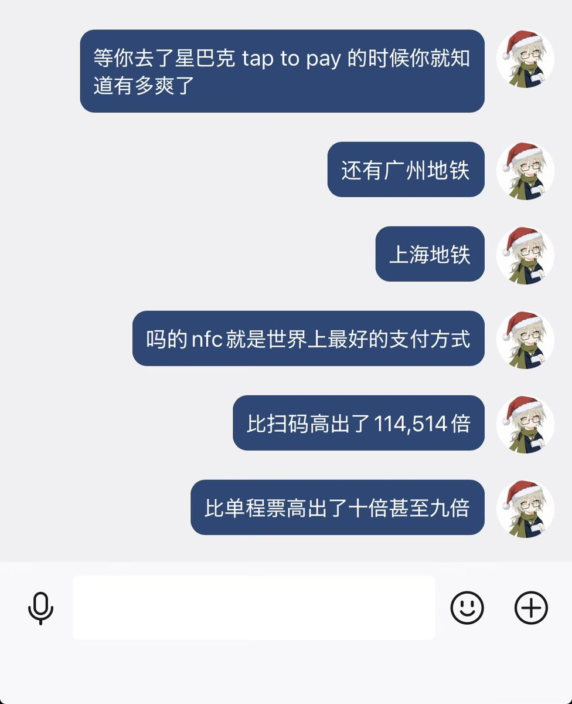

星野ふじ
@hoshinofujivy
@aoim33 现在支付宝似乎在普及，怎奈习惯已经形成，难以改变.
加上营销号大肆宣传nfc盗刷资金，形成了舆论阻力.之前带朋友来北京玩，教她用nfc乘地铁，结果一句“我听网上说xxxx”给拒绝了
之前在hk使用八达通，简直不要太方便，希望很快能在大陆普及

Aoi M
@aoim33
nfc 这么好的东西为什么不全国普及 https://t.co/tx9BzmZARI